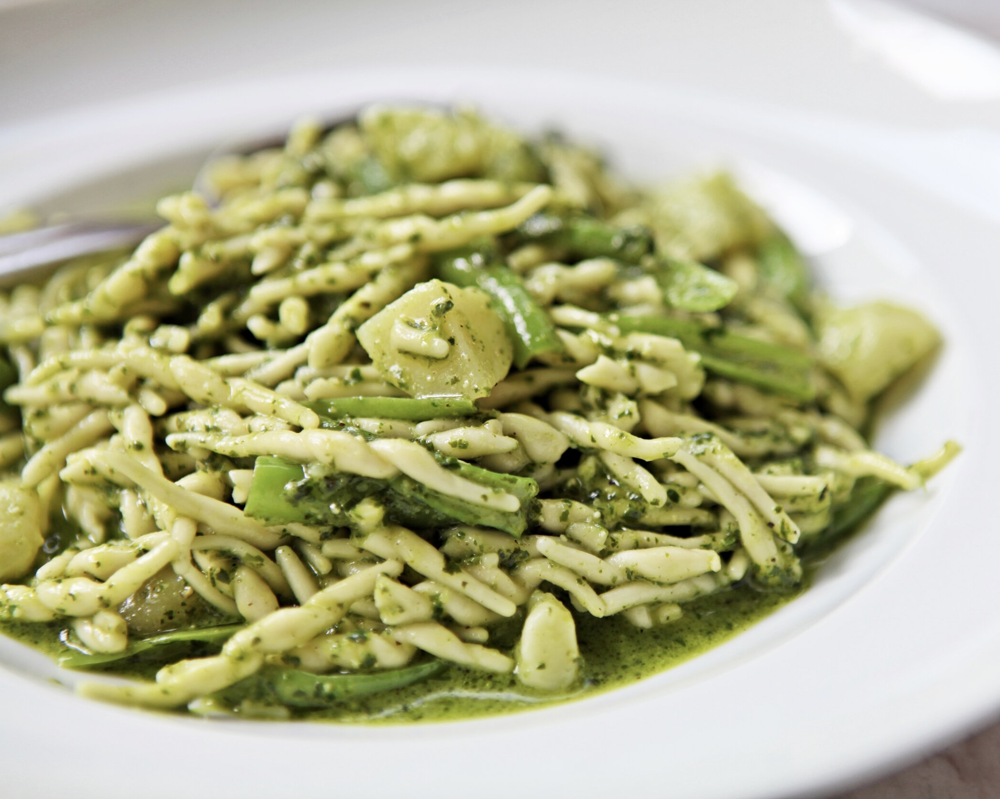

INGREDIENTS
- 1/2 cup of pine nuts
- 3 cups packed fresh basil leaves from about 3 oz
- 1/2 cup grated Pecorino cheese
- 3 garlic cloves
- 1/2 tsp. salt
- 1/4 tsp. ground black pepper
- 1/2 cup extra virgin olive oil
PROCEDURE
- Chop the pine nuts in a food processor,
- Cut the cherry tomatoes into 4 pieces, and remove and discard the seeds.
- Place them in the food processor along with garlic, basil leaves, pecorino, and olive oil until you get a rough paste.
- Add water to a saucepan and bring to a boil.
- Add the pasta and cook until al dente
- Drain the pasta and reserve 1/3 cup (80ml) of cooking liquid.
- Place the pasta in a pan with the pesto and stir.
- Finally, add the reserved cooking water and stir again until the sauce is creamy.
- Done!
- Serve pasta topped with extra Pecorino, basil leaves, and cherry tomatoes.